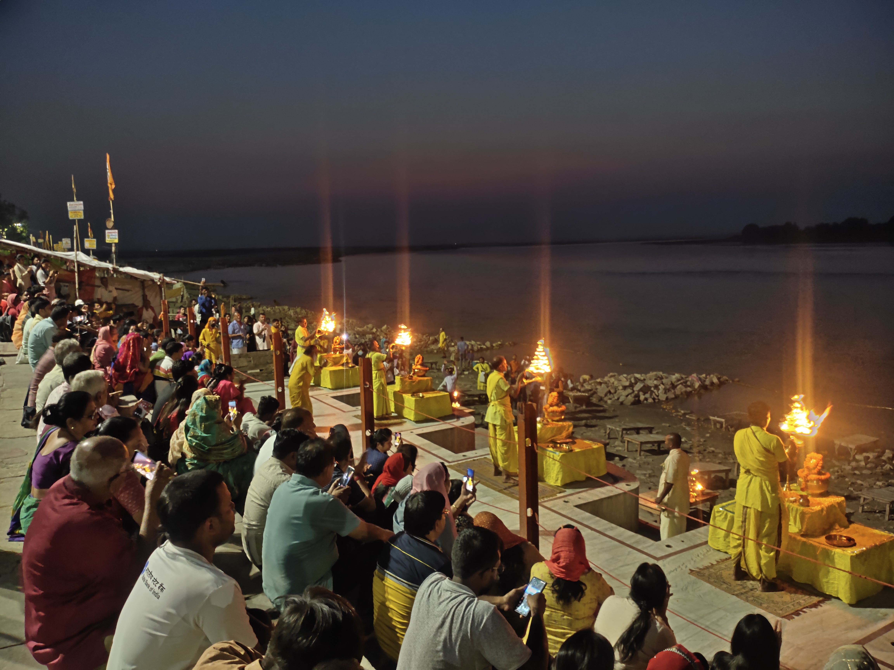
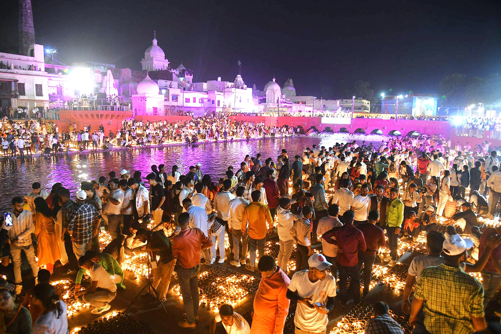
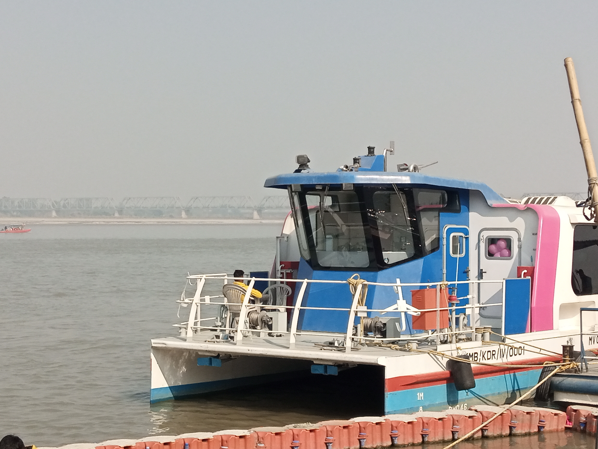
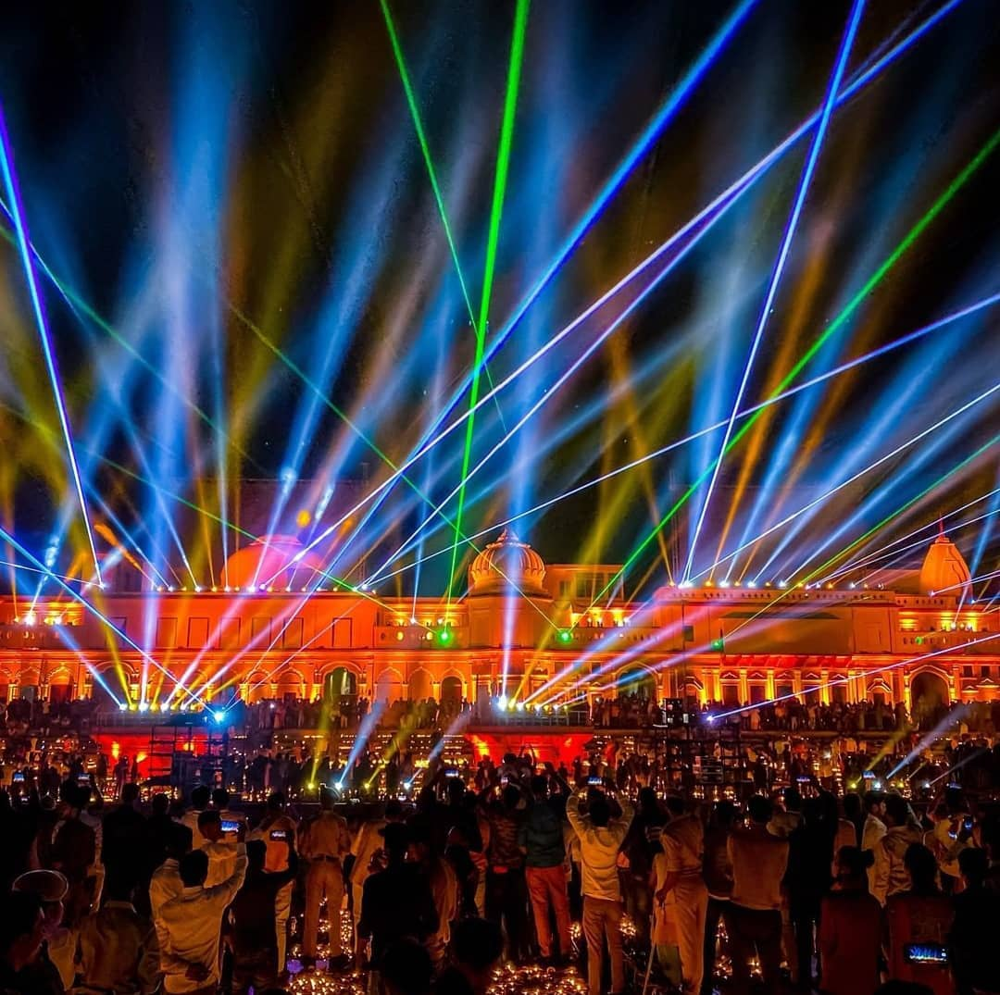

Visual Journey of Saryu
Glimpses of Sacred Saryu Ghat
Witness the serene morning waters, radiant sunset Maha Aarti, illuminated Deepotsav diyas, and iconic riverfront moments.

Maha Aarti
Naya Ghat
Evening Saryu Maha Aarti
Priests holding radiant brass tiered lamps as conch shells resound at dusk.

Deepotsav
Guinness Record
Deepotsav Festival of Light
Millions of earthen diyas glowing across Ram Ki Paidi during Diwali.
Ram Ki Paidi
Promenade
Ram Ki Paidi Waterfront
Architectural stepped banks and illuminated bridges reflecting across clean waters.

Boats & Cruise
Jatayu & Pushpak
Solar Cruise & Boats
Eco-friendly passenger catamarans and wooden boats floating on the tranquil river.

Ram Ki Paidi
Nightly 7:15 PM
Water Screen Laser Show
Musical fountains and dynamic laser projections recounting the Ramayana saga.

Holy Snan
Sunrise
Dawn Snan & Serenity
Devotees offering prayers and lamps into the golden morning current.